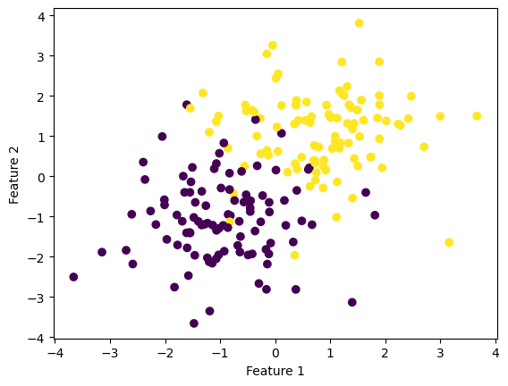
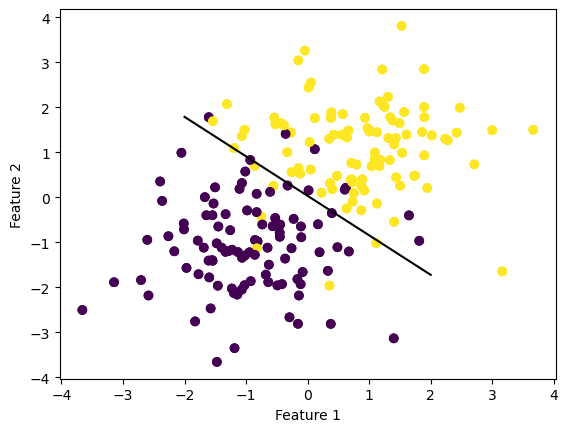
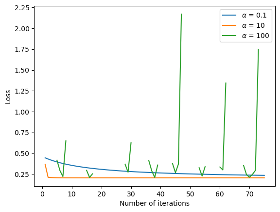
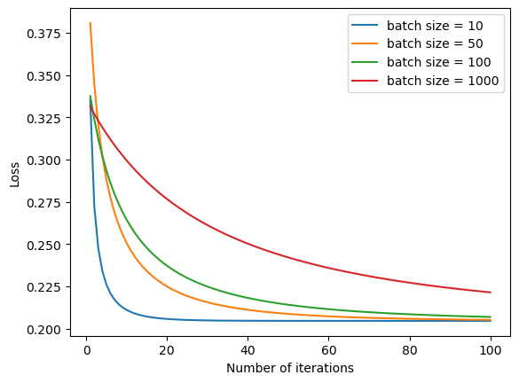

This equation is the gradient for empirical risk for logistic regression. Using this equation, we can substitute it into \(w^{(t +1)} \leftarrow w^{(t)} - \alpha \nabla L(w^{(t)})\) and choose our value of \(\alpha\) until it converges.
For stochastic gradient descent, a similar equation to the \(\textit{fit}\) function was used:
where \(S \subseteq [n] = \{1,...,n\}\) and is called the batch size.
from logReg import LogisticRegressionfrom sklearn.datasets import make_blobsfrom matplotlib import pyplot as pltimport numpy as npnp.seterr(all='ignore') # make the datap_features =3X, y = make_blobs(n_samples =200, n_features = p_features -1, centers = [(-1, -1), (1, 1)])fig = plt.scatter(X[:,0], X[:,1], c = y)xlab = plt.xlabel("Feature 1")ylab = plt.ylabel("Feature 2")

LR = LogisticRegression()LR.fit(X, y, alpha =0.1, max_epochs =1000)# inspect the fitted value of wLR.w def draw_line(w, x_min, x_max): x = np.linspace(x_min, x_max, 101) y =-(w[0]*x + w[2])/w[1] plt.plot(x, y, color ="black")fig = plt.scatter(X[:,0], X[:,1], c = y)fig = draw_line(LR.w, -2, 2)fig = plt.scatter(X[:,0], X[:,1], c = y)xlab = plt.xlabel("Feature 1")ylab = plt.ylabel("Feature 2")

Evolution of Loss Function for Gradient Descent and Stochastic Gradient Descent
In this experiment, I changed the values of the learning rate \(\alpha\) to see which values fails to converge.
alpha_list = [0.1, 10, 100] # list of learning rates to testfor i inrange(len(alpha_list)):if i ==0: LR = LogisticRegression() LR.fit(X, y, alpha = alpha_list[i], max_epochs =75) loss =len(LR.loss_history) plt.plot(np.arange(loss) +1, LR.loss_history, label =r"$\alpha$ = 0.1")else: LR = LogisticRegression() LR.fit(X, y, alpha = alpha_list[i], max_epochs =75) loss =len(LR.loss_history) plt.plot(np.arange(loss) +1, LR.loss_history, label =r"$\alpha$ = %d"%alpha_list[i])plt.legend()plt.xlabel('Number of iterations')plt.ylabel('Loss')plt.show()

The loss of a learning rate too high will not converge. In this case, I’ve used a learning rate of \(\alpha = 100\), and the graph shows that for this value the loss does not converge.
Experiment 2 (Changing Batch Size)
In this experiment, I am changing the batch size to see how it influences the convergence of the algorithm. This experiment uses the fit_stochastic function.
#LR = LogisticRegression()batch_list = [10, 50, 100, 1000] # list of batch sizes to testfor i inrange(len(batch_list)): LR = LogisticRegression() LR.fit_stochastic(X, y, alpha =0.1, batch_size = batch_list[i], max_epochs =100) loss =len(LR.loss_history) plt.plot(np.arange(loss) +1, LR.loss_history, label ="batch size = %d"%batch_list[i])plt.legend()plt.xlabel('Number of iterations')plt.ylabel('Loss')plt.show()

As shown in this graph, when the batch size is smaller, the algorithm converges faster.